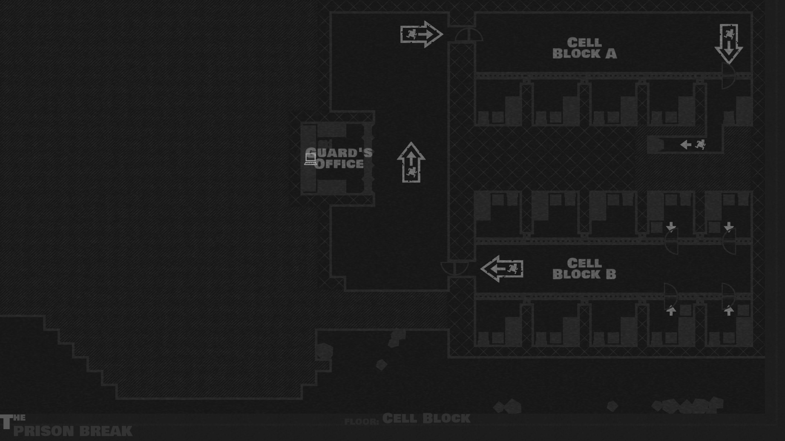

Select Level:
The Prison Break
Hijack at the Hairpin
The Sound of Violence
Foreign Affairs
Prologue: The Mole
Prologue: The Lookout
After the Fire
Cache
Select Floor
Street Level
Tunnels
Cell Block
